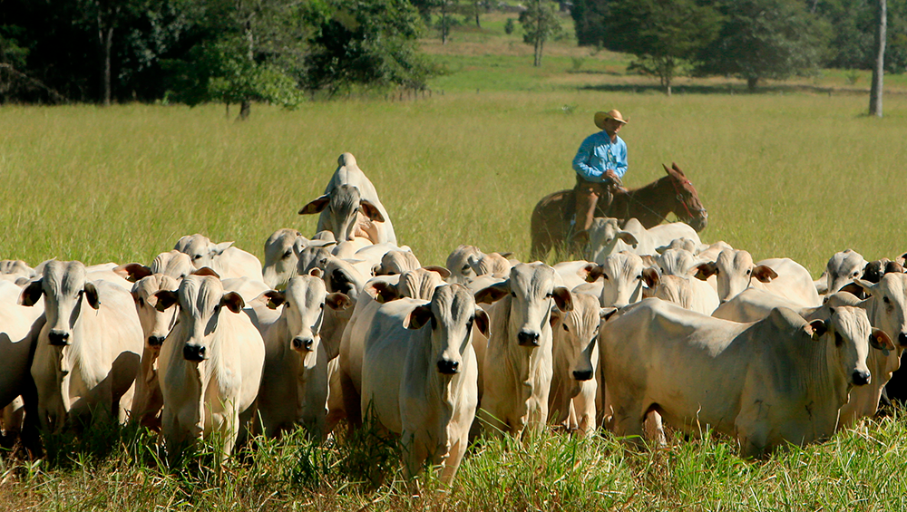

Pecuária
Pecuária é uma atividade económica voltada para a criação de animais. As atividades pecuárias correspondem à criação e comercialização de animais diversos, como frangos, porcos e bois.
A origem do termo pecuária, na lingua latina, remete justamente à criação de animais, no caso específico dessa terminologia, criação de gado. Sendo assim, é um importante ramo da economia, em especial, por propiciar o abastecimento de alimentos para a população. Ademais, a pecuária também fornece matéria-prima para a indústria, como couro e là.
Tipos
A pecuária é uma atividade dividida conforme os elementos obtidos na sua produção. Sendo assim, essa atividade é caracterizada pelos diversos produtos oriundos das criações de animais.
Os principais tipos de pecuária são:
-Pecuária leiteira: é caracterizada pela produção de leite. Esse alimento é o principal componente na fabricação de produtos como queijos e manteigas. A pecuária leiteira é bastante forte no Brasil, em especial, no estado de Minas Gerais;
-Pecuária de corte: está relacionada com a produção de carne. O Brasil é um dos grandes produtores e exportadores de carne. Os estados da região Centro-Oeste, por exemplo, têm grande tradição na pecuária de corte.
Como a pecuária ameaça a biodiversidade?
A pecuária pode afetar a biodiversidade de várias maneiras, incluindo a conversão de habitats naturais em pastagens, poluição da água devido aos residuos animais e o uso exessivo de recursos naturais como água e terra. Também pode haver impactos indiretos, como a fragmentação de habitats e a introdução de espécies invasoras
